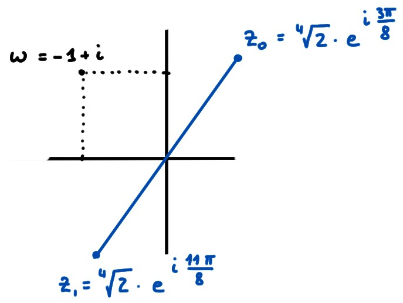
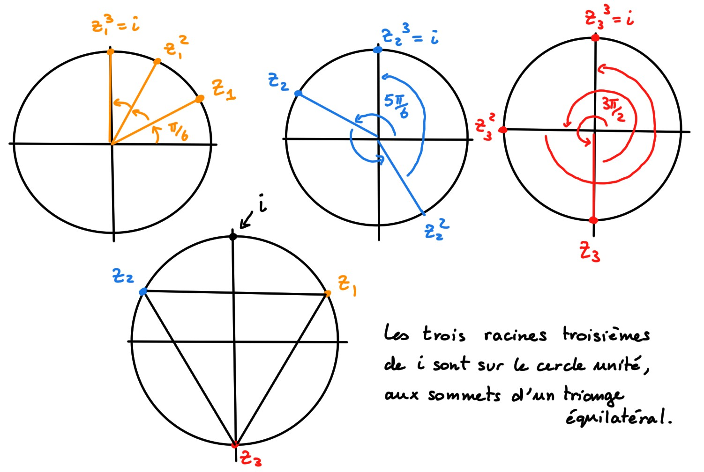
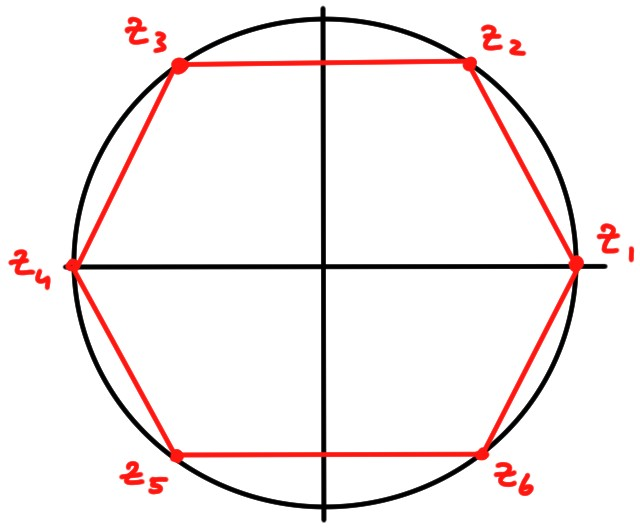

4.5 Racines de nombres complexes
Fixons \(\omega\in \mathbb{C}\) et un entier \(n\in \mathbb{N}\).
Tout complexe \(z\in \mathbb{C}\) tel que
\[z^n=\omega\,.\]
est appelée racine \(n\)-ème de \(\omega\).
Remarquons que \(\omega=0\) ne possède qu'une seule racine, car
\(z^n=0\)
n'a qu'une seule solution: \(z=0\).
Mais un complexe \(\omega\neq 0\) possède exactement \(n\) racines \(n\)-ème:
Soit \(\omega=se^{\mathsf{i} \varphi}\), \(s>0\).
Si \(n\in
\mathbb{N}_*\), alors les racines \(n\)-èmes de \(\omega\) sont données par
\[
\bigl\{
z_k=\sqrt[n]{s}\cdot e^{\mathsf{i} \frac{\varphi+2k\pi}{n}}\,:\,k=0,1,2,\dots,n-1
\bigr\}
\]
Preuve:
En écrivant \(z=re^{\mathsf{i} \theta}\), par de Moivre,
\(z^n=r^ne^{\mathsf{i} n\theta}\). Donc,
\(z^n=\omega\) si et seulement si \(r^ne^{\mathsf{i} n\theta}=se^{\mathsf{i} \varphi}\),
ce qui entraîne
\[ r^n=s\,,\qquad n\theta=\varphi+2k\pi\,,\]
où \(k\) est arbitraire, ce qui donne
\[ r=\sqrt[n]{s}\,,\qquad \theta=\frac{\varphi+2k\pi}{n}\,.\]
Remarquons que les entiers \(k\) qui donnent des solutions distinctes
sont \(k=0,1,2,\dots,n-1\).
Par l'expression ci-dessus, on voit que les racines \(n\)-èmes
sont sur les sommets d'un polygone régulier. Voyons quelques exemples.
Calculons les racines carrées de \(-1+\mathsf{i}\):
\[ z^2=-1+\mathsf{i}
\]
Comme ici \(\omega=-1+\mathsf{i}=\sqrt{2}\cdot
e^{\mathsf{i} \frac{3\pi}{4}}\), les racines sont
\[ z_k
=\sqrt[4]{2}\cdot e^{\mathsf{i}\frac{\frac{3\pi}{4}+2k\pi}{2}}
=\sqrt[4]{2}\cdot e^{\mathsf{i}\frac{3\pi}{8}+k\pi}\,,\qquad k=0,1\,.
\]
Les deux racines sont donc:

Si \(z^2=-1+2\mathsf{i}\), on pourrait être tenté d'écrire
\(z=\pm\sqrt{-1+2\mathsf{i}}\). On évitera pourtant d'utiliser le symbole
''\(\sqrt{\cdots}\)'' pour les nombres complexes, la fonction ''racine carrée''
\(z\mapsto \sqrt{z}\) étant une fonction compliquée à définir rigoureusement sur
tout \(\mathbb{C}\).
Calculons les racines cubiques de \(\mathsf{i}\):
\[
z^3=\mathsf{i}\,.
\]
Comme \(\mathsf{i}=1\cdot e^{\mathsf{i} \frac{\pi}{2}}\), les racines sont
\[
z_k
=\sqrt[3]{1}\cdot e^{\mathsf{i}\frac{\frac{\pi}{2}+2k\pi}{3}}
=e^{\mathsf{i}(\frac{\pi}{6}+\frac{2k\pi}{3})}\,,\qquad k=0,1,2\,.
\]
On obtient trois racines distinctes:
\[\begin{aligned}
k=0&:\quad z_0=e^{\mathsf{i}\frac{\pi}{6}}\,\\
k=1&:\quad z_1=e^{\mathsf{i}\frac{5\pi}{6}}\,\\
k=2&:\quad z_2=e^{\mathsf{i}\frac{3\pi}{2}}\,.
\end{aligned}\]
Ces racines sont sur le cercle trigonométrique:

Calculons les racines sixièmes de l'unité, c'est-à-dire les solutions de
\[
z^6=1\,.
\]
Sous forme polaire, \(1=1e^{\mathsf{i} 0}\), et donc ses racines sixièmes sont
\[
z_k=\sqrt[6]{1}\cdot e^{\mathsf{i} \frac{0+2k\pi}{6}}
=e^{\mathsf{i}\frac{k\pi}{3}}\,,\qquad k=0,1,2,3,4,5\,.
\]
